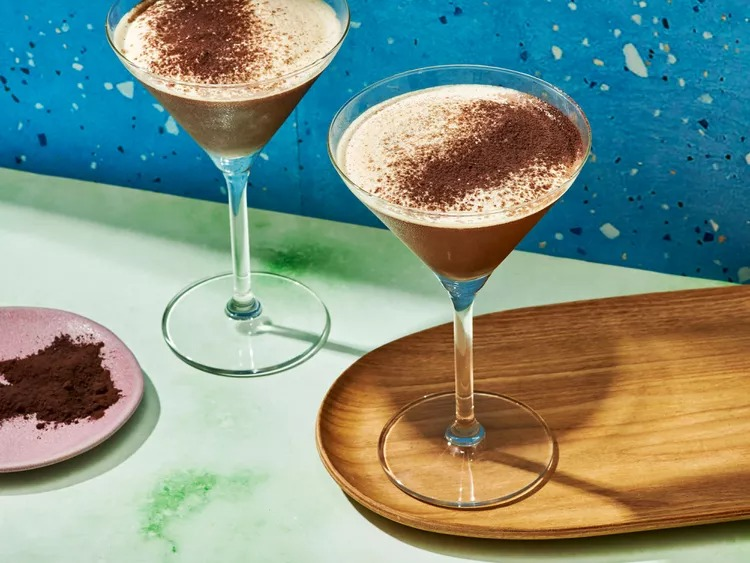
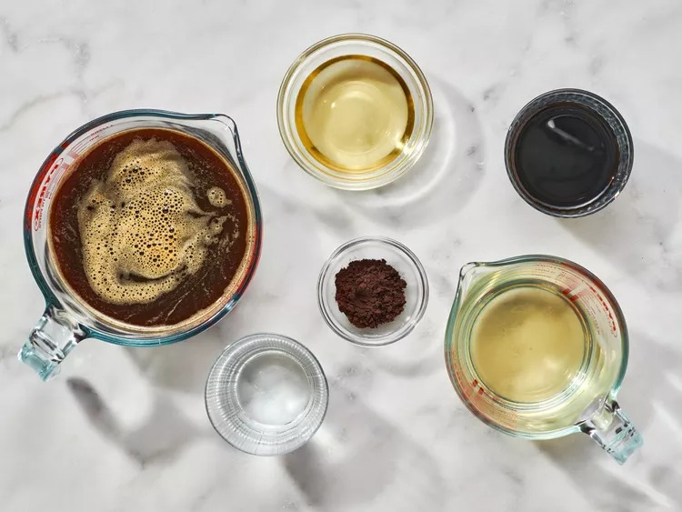
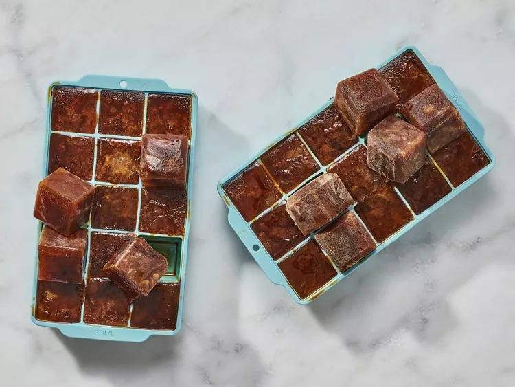
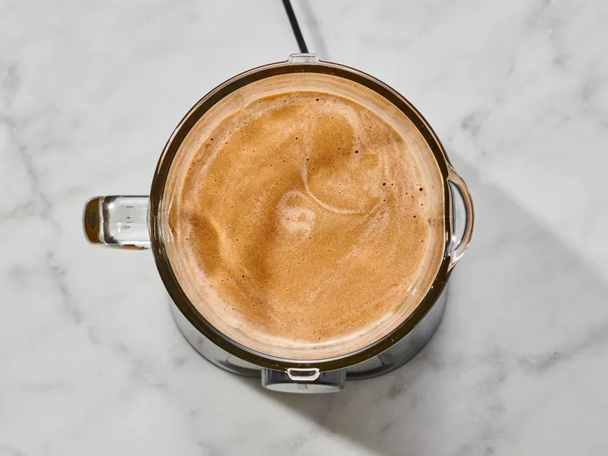
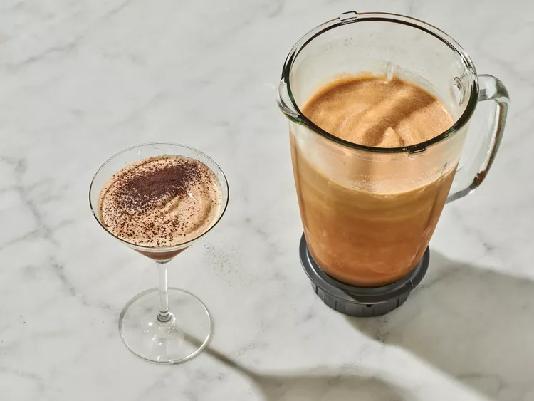

Frozen Espresso Martini

Description
This frozen espresso martini is perfect for hot weather and as a
pick-me-up after a hectic work day. After all, it’s 100 degrees and 5
o’clock somewhere!
Ingredients
- 3 cups freshly brewed espresso
- 1 cup simple syrup
- 6 fluid ounces vanilla vodka
- 6 fluid ounces coffee liqueur, such as Kahlúa®
- 2 fluid ounces hazelnut liqueur, such as Frangelico®
- black onyx cocoa powder, for dusting
Steps
- Gather all ingredients.

-
Stir brewed espresso and simple syrup together in a small pitcher. Pour
mixture into ice cube trays and freeze for 8 hours or overnight.

-
Pour vodka, Kahlúa, and Frangelico into a blender. Add in the espresso
ice cubes, and blend until smooth.

-
Pour frozen mixture into 4 martini glasses. Lightly dust the martini
with black onyx cocoa powder. Enjoy!
